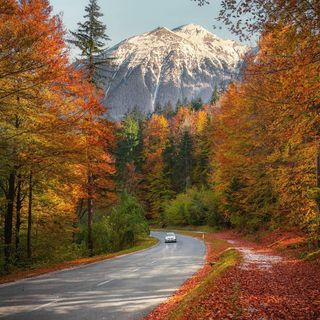
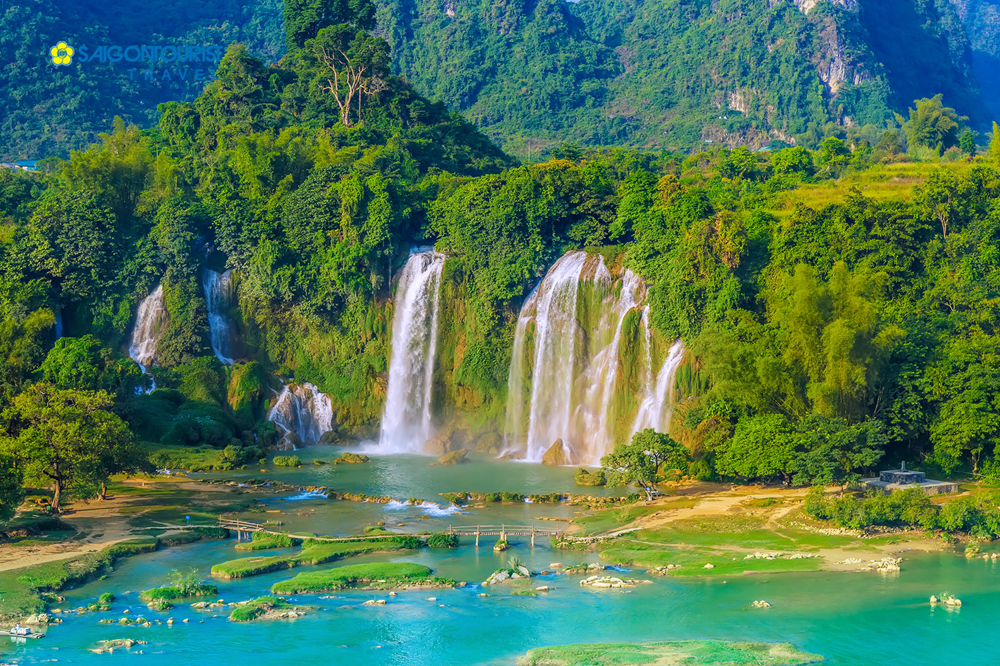
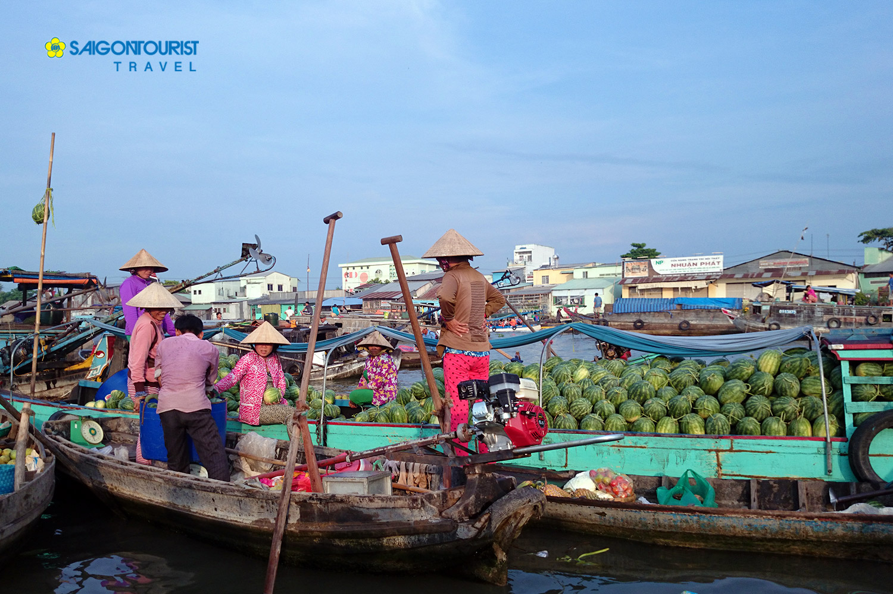
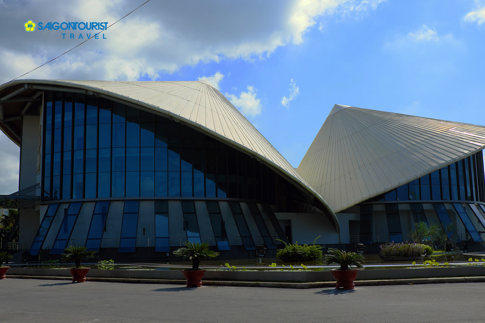
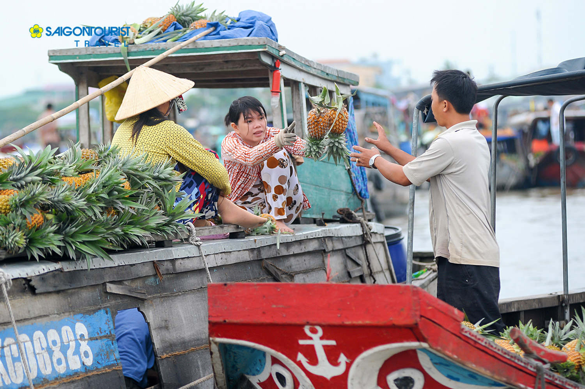
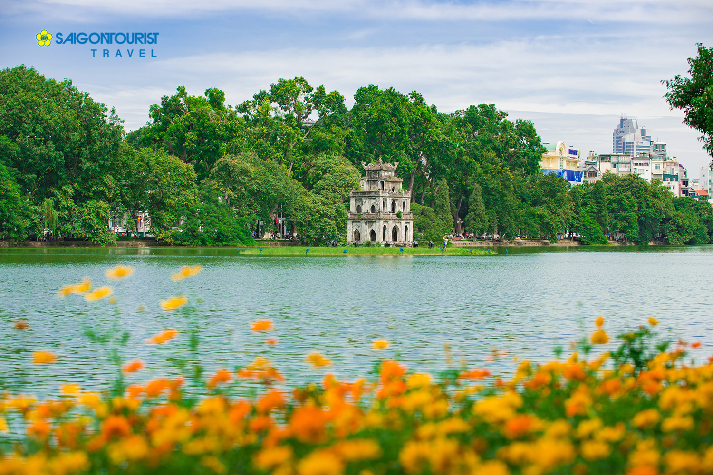
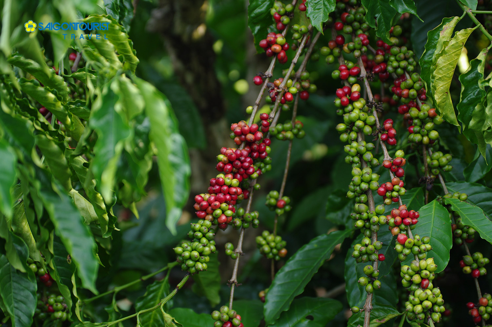
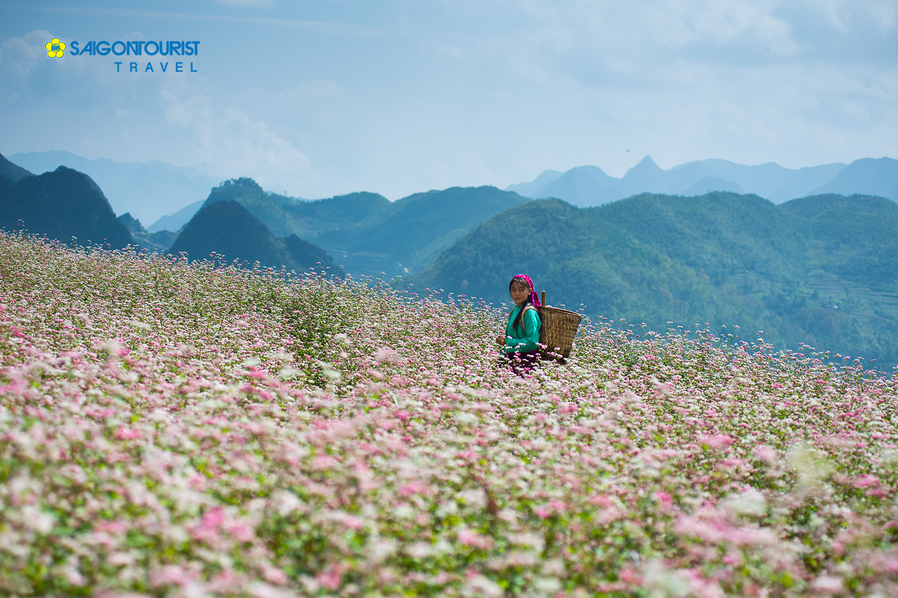

Experience with someone you love
Interesting tourist destinations for vacation with family and friends







You are feeling bored, tired, stressed ... and you are losing enthusiasm at work, even in everyday life.
In order to solve the above problems it is best to travel. Because travel has become a necessity for the vast majority of people around the world.
Travel offers you enormous benefits that you may not have thought of! Here are the reasons why we need to travel as much as possible in our lives.
The benefits of traveling can be counted as follows:
1. Relieve stress.
2. Avoid monotony.
3. Enjoy the fresh air.
4. More dynamic
5. Will enjoy local specialties with many delicious and strange dishes.
6. To meet many people.
7. We can only be young once. If we don't take advantage of it, we will never have a chance to travel like this.
Interesting tourist destinations for vacation with family and friends

THÁP RÙA- HÀ NỘI 36 PHỐ PHƯỜNG
Nhắc đến Hà Nội, đến Hồ Gươm thì không thể không kể đến Tháp Rùa – biểu tượng ngàn năm văn hiến của thủ đô. Công trình kiến trúc tuy chỉ
nhỏ bé này nhưng ẩn trong đó là những ý nghĩa lịch sử, dấu tích trường tồn với thời gian mà không một địa danh nào có thể thay thế được.
Tháp rùa là một ngọn tháp nhỏ nằm trên một gò đất nhỏ rộng khoảng 350m2 nằm giữa Hồ Gươm, quận Hoàn Kiếm Hà Nội. Với vị trí đắc địa đó, rất thuận lợi
để bạn di chuyển từ các điểm khác nhau ở Hà Nội đến với tháp.Du khách thường checkin với Tháp Rùa khi đứng trên bờ Hồ, những bức ảnh từ phía xa
có nhìn rõ hình ảnh của tháp in bóng dưới mặt hồ....

DU LỊCH BUÔN MA THUẬT-CÀ PHÊ TÂY NGUYÊN
Nổi tiếng với sự bình yên, nhẹ nhàng, không khí trong lành,... Buôn Ma Thuột khiến nhiều người tưởng rằng nơi này chẳng có gì thú vị, chỉ có cây cối, đồi núi
và…cà phê. Nhưng lầm to rồi nhé, thời gian gần đây, Buôn Ma Thuột đã trở thành sự lựa chọn mới lạ cho những tín đồ yêu du lịch khi bị sự xinh đẹp của
nơi này cuốn hút.Và xứ cà phê bây giờ, sẽ cho bạn cảm giác khác hẳn với ngày xưa khi đã thay đổi, nhưng
vẫn giữ được cái hồn thư thả vốn có, những quán cà phê, những địa điểm vui chơi ở đây mang cái nét riêng mà không nơi đâu có được. Nếu là một người yêu thích khám phá...

MÙA HOA TAM GIÁC MẠCH HÀ GIANG-ĐỒNG VĂN-CAO BẰNG-THÁC BẢN GIỐC-LẠNG SƠN
Tam giác mạch nhỏ bé, mỏng manh, tím hồng đan xen nhẹ nhàng trên nền đá xám dưới trời xanh, mây trắng Hà Giang khiến bao du khách ngẩn ngơ quên lối về.
Du lịch Hà Giang khoảng cuối thu, đầu đông, từ tháng 10 đến đầu tháng 12, bạn sẽ được mãn nhãn trước khung cảnh tuyệt đẹp của miền cao nguyên đá khi “nữ hoàng cách loài hoa tại đây,
hoa Tam giác mạch khoe sắc khắp chốn. Từ Quản Bạ, Yên Minh đến Phố Cáo, Đồng Văn, khi bạt ngàn thung lũng,
lúc trải thảm, uốn lượn theo nương đồi toàn sắc tím hồng li ti khiến khung cảnh vừa kỳ vĩ vừa thơ mộng, lãng mạn tựa như miền cổ tích....
Swing by for a cup of coffee, or leave us a message: